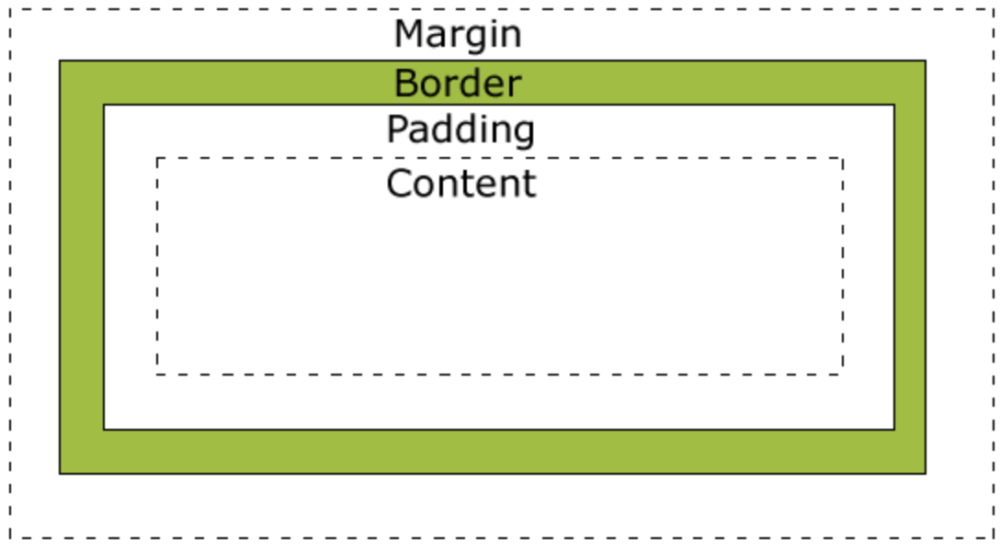

HTML中块级元素和行内元素的总结和区分。
HTML标签
html标签定义：
- 是由一对尖括号包裹的单词构成,例如: <html>.
- 标签不区分大小写<html> 和 <HTML>, 推荐使用小写.
- 标签分为两部分: 开始标签<html> 和 结束标签</html>, 两个标签之间的部分我们叫做标签体.
- 有些标签功能比较简单,使用一个标签即可,这种标签叫做自闭和标签,例如: <br/><hr/><input/><img/>
- 标签可以嵌套,例如:<a><b><b/><a/>;但是不能交叉嵌套,例如:<a><b><a/><b/>
所有的html标签参考w3school中的html手册.
css盒模型
所有HTML元素可以看作盒子，在CSS中，"box model"这一术语是用来设计和布局时使用。CSS盒模型本质上是一个盒子，封装周围的HTML元素，它包括：边距，边框，填充，和实际内容。盒模型允许我们在其它元素和周围元素边框之间的空间放置元素。
下面的图片说明了盒子模型(Box Model)：

不同部分的说明：
- Margin(外边距) - 清除边框外的区域，外边距是透明的。
- Border(边框) - 围绕在内边距和内容外的边框。
- Padding(内边距) - 清除内容周围的区域，内边距是透明的。
- Content(内容) - 盒子的内容，显示文本和图像。
怪异模式和标准模式下的css盒模型的解析：
- 标准模式中，网页元素的宽度是有padding,border,width三者的宽度相加决定的。
- 怪异模式中，width包含padding和border的宽度，即网页宽度为width。
css3新增box-sizing属性，用于更改用于计算元素宽度和高度的默认的 CSS 盒子模型：
- content-box，默认值。如果你设置一个元素的宽为100px，那么这个元素的内容区会有100px宽，并且任何边框和内边距的宽度都会被增加到最后绘制出来的元素宽度中，即标准模式下的盒模型。
- border-box 告诉浏览器去理解你设置的边框和内边距的值是包含在width内的。也就是说，如果你将一个元素的width设为100px,那么这100px会包含其它的border和padding，内容区的实际宽度会是width减去border + padding的计算值，即怪异模式下的盒模型。
块级元素和行内元素的定义
块级元素？
- 总是在新行上开始；
- 高度，行高以及外边距和内边距都可控制；
- 宽度缺省是它的容器的100%，除非设定一个宽度。
- 它可以容纳内联元素和其他块元素
行内元素？
- 和其他元素都在一行上；
- 高，行高及外边距和内边距不可改变；
- 宽度就是它的文字或图片的宽度，不可改变
- 内联元素只能容纳文本或者其他内联元素
对行内元素，需要注意如下：
- 设置宽度width 无效。
- 设置高度height 无效，可以通过line-height来设置。
- 设置margin 只有左右margin有效，上下无效。
- 设置padding 只有左右padding有效，上下则无效。注意元素范围是增大了，但是对元素周围的内容是没影响的。
通过display属性对行内元素和块级元素进行切换(主要看第2.3.4个值)：
| 值 | 描述 |
|---|---|
| none | 此元素不会被显示。 |
| block | 此元素将显示为块级元素，此元素前后会带有换行符。 |
| inline | 默认。此元素会被显示为内联元素，元素前后没有换行符。 |
| inline-block | 行内块元素。（CSS2.1 新增的值） |
| list-item | 此元素会作为列表显示。 |
| run-in | 此元素会根据上下文作为块级元素或内联元素显示。 |
| compact | CSS 中有值 compact，不过由于缺乏广泛支持，已经从 CSS2.1 中删除。 |
| marker | CSS 中有值 marker，不过由于缺乏广泛支持，已经从 CSS2.1 中删除。 |
| table | 此元素会作为块级表格来显示（类似 <table>），表格前后带有换行符。 |
| inline-table | 此元素会作为内联表格来显示（类似 <table>），表格前后没有换行符。 |
| table-row-group | 此元素会作为一个或多个行的分组来显示（类似 <tbody>）。 |
| table-header-group | 此元素会作为一个或多个行的分组来显示（类似 <thead>）。 |
| table-footer-group | 此元素会作为一个或多个行的分组来显示（类似 <tfoot>）。 |
| table-row | 此元素会作为一个表格行显示（类似 <tr>）。 |
| table-column-group | 此元素会作为一个或多个列的分组来显示（类似 <colgroup>）。 |
| table-column | 此元素会作为一个单元格列显示（类似 <col>） |
| table-cell | 此元素会作为一个表格单元格显示（类似 <td> 和 <th>） |
| table-caption | 此元素会作为一个表格标题显示（类似 <caption>） |
| inherit | 规定应该从父元素继承 display 属性的值。 |
块级元素和行内元素的分类
html中的块级元素：
| 标签 | 描述 |
|---|---|
| <address> | 定义地址。 |
| <article> | 定义文章。 |
| <aside> | 定义页面内容之外的内容。 |
| <audio> | 定义声音内容。 |
| <blockquote> | 定义长的引用。 |
| <canvas> | 定义图形。 |
| <caption> | 定义表格标题。 |
| <dd> | 定义定义列表中项目的描述。 |
| <div> | 定义文档中的节。 |
| <dl> | 定义定义列表。 |
| <dt> | 定义定义列表中的项目。 |
| <details> | 定义元素的细节。 |
| <fieldset> | 定义围绕表单中元素的边框。 |
| <figcaption> | 定义 figure 元素的标题。 |
| <figure> | 定义媒介内容的分组，以及它们的标题。 |
| <footer> | 定义 section 或 page 的页脚。 |
| <form> | 定义供用户输入的 HTML 表单。 |
| <h1> to <h6> | 定义 HTML 标题。 |
| <header> | 定义 section 或 page 的页眉。 |
| <hr> | 定义水平线。 |
| <legend> | 定义 fieldset 元素的标题。 |
| <li> | 定义列表的项目。 |
| <menu> | 定义命令的列表或菜单。 |
| <meter> | 定义预定义范围内的度量。 |
| <nav> | 定义导航链接。 |
| <noframes> | 定义针对不支持框架的用户的替代内容。 |
| <noscript> | 定义针对不支持客户端脚本的用户的替代内容。 |
| <ol> | 定义有序列表。 |
| <output> | 定义输出的一些类型。 |
| <p> | 定义段落。 |
| <pre> | 定义预格式文本。 |
| <section> | 定义 section。 |
| <table> | 定义表格。 |
| <tbody> | 定义表格中的主体内容。 |
| <td> | 定义表格中的单元。 |
| <tfoot> | 定义表格中的表注内容（脚注）。 |
| <th> | 定义表格中的表头单元格。 |
| <thead> | 定义表格中的表头内容。 |
| <time> | 定义日期/时间。 |
| <tr> | 定义表格中的行。 |
| <ul> | 定义无序列表。 |
html中的行内元素：
| 标签 | 描述 |
|---|---|
| <a> | 定义锚。 |
| <abbr> | 定义缩写。 |
| <acronym> | 定义只取首字母的缩写。 |
| <b> | 定义粗体字 |
| <bdo> | 定义文字方向。 |
| <big> | 定义大号文本。 |
| <br> | 定义简单的折行。 |
| <button> | 定义按钮 (push button)。 |
| <cite> | 定义引用(citation)。 |
| <code> | 定义计算机代码文本。 |
| <command> | 定义命令按钮。 |
| <dfn> | 定义定义项目。 |
| <del> | 定义被删除文本。 |
| <em> | 定义强调文本。 |
| <embed> | 定义外部交互内容或插件。 |
| <i> | 定义斜体字。 |
| <img> | 定义图像。 |
| <input> | 定义输入控件。 |
| <kbd> | 定义键盘文本。 |
| <label> | 定义 input 元素的标注。 |
| <map> | 定义图像映射。 |
| <mark> | 定义有记号的文本。 |
| <objec> | 定义内嵌对象。 |
| <progress> | 定义任何类型的任务的进度。 |
| <q> | 定义短的引用。 |
| <samp> | 定义计算机代码样本。 |
| <select> | 定义选择列表（下拉列表）。 |
| <small> | 定义小号文本。 |
| <span> | 定义文档中的节。 |
| <strong> | 定义强调文本。 |
| <sub> | 定义下标文本。 |
| <sup> | 定义上标文本。 |
| <textarea> | 定义多行的文本输入控件。 |
| <time> | 定义日期/时间。 |
| <tt> | 定义打字机文本。 |
| <var> | 定义文本的变量部分。 |
| <video> | 定义视频。 |
| <wbr> | 定义可能的换行符。 |